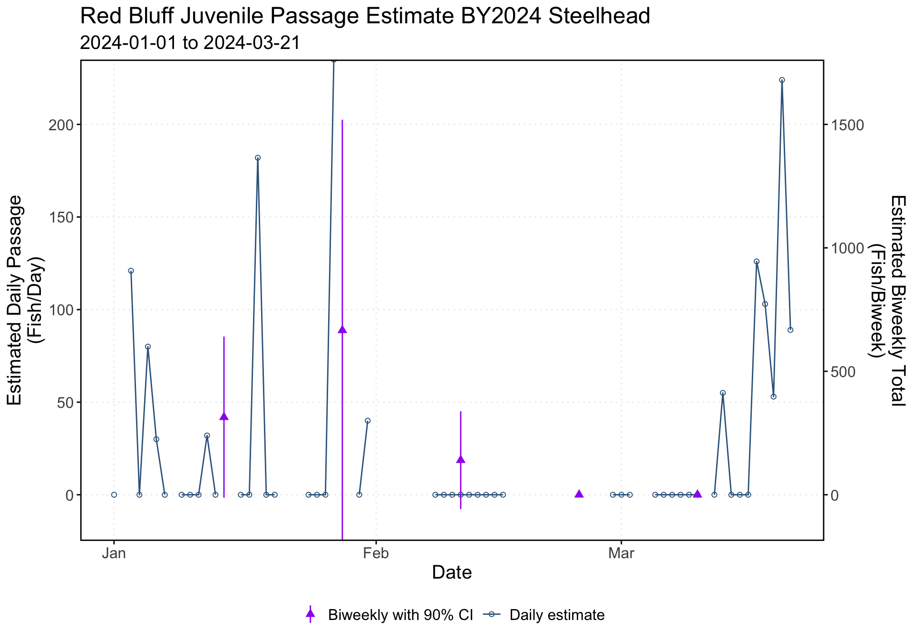

source(here("R/steelhead_plot_rbdd_biweekly_passage.R"))Warning in geom_line(aes(y = estimated_passage, color = "Daily estimate"), :
Ignoring unknown parameters: `shape`Warning: The `trans` argument of `sec_axis()` is deprecated as of ggplot2 3.5.0.
ℹ Please use the `transform` argument instead.Warning: Removed 31 rows containing missing values or values outside the scale range
(`geom_point()`).Warning: Removed 76 rows containing missing values or values outside the scale range
(`geom_pointrange()`).